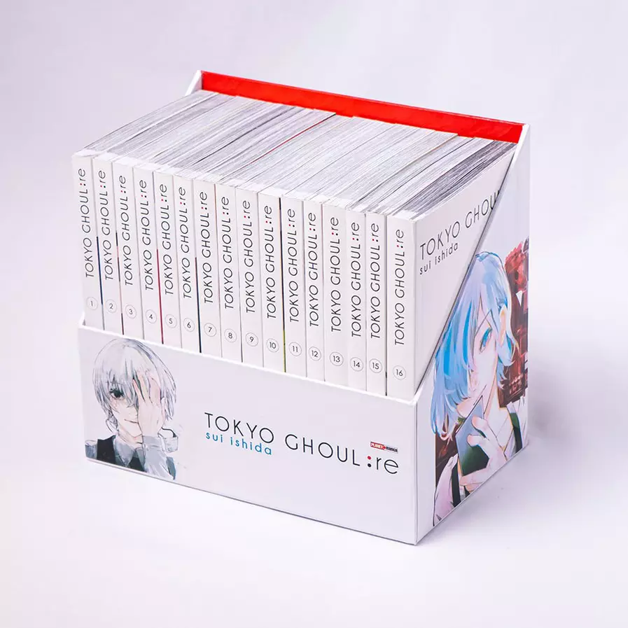

Tokyo Ghoul começou como uma série de mangá, escrita e desenhada por Sui Ishida. Ele começou a produção em 2011, na edição 41 da Young Jump, publicada pela Shueisha em 8 de setembro de 2011, e o capítulo final apareceu na edição 42 de 2014, lançado em 18 de setembro de 2014. O mangá possui 14 volumes independentes, publicados por Young Jump Comics, cunho da Shueisha, entre 17 de fevereiro de 2012 e 17 de outubro de 2014. O mangá foi licenciado para o inglês pela Viz Media e foi lançado em 16 de junho de 2015.
Em agosto de 2013, um mangá prequel, Tokyo Ghoul: Jack, foi lançado em mangá digital pela revista Jump Live. A história contém 7 capítulos e se concentra em Arima Kishou e Taishi Fura 10 anos antes dos acontecimentos de Tokyo Ghoul. O mangá apresenta vários personagens da série principal, incluindo Arima Kishou, Taishi Fura e futuros personagens principais como Itsuki Marude e Yakumo "Yamori" Oomori.
Em 17 de outubro de 2014 um livro cheio de ilustrações conhecidas como Tokyo Ghoul Zakki foi lançado junto com o volume 14 e final do mangá. Zakki inclui todas as imagens promocionais, capa dos volumes e inéditos conceitos de arte com comentários do criador Sui Ishida.
No Brasil, o mangá é licenciado e publicado pela editora Panini desde julho de 2015. Em Portugal, o mangá é publicado pela Editora Devir desde 7 de maio de 2016.
A sequência nomeada Tokyo Ghoul: re começou a ser serializada em 16 de outubro de 2014, na 46ª edição da Young Jump. A história se passa 2 anos após o fim da série original, Tokyo Ghoul, e introduz um novo conjunto de personagens e continuação ao enredo.
Em Portugal, a Editora Devir lançou o mangá a 18 de maio de 2019.